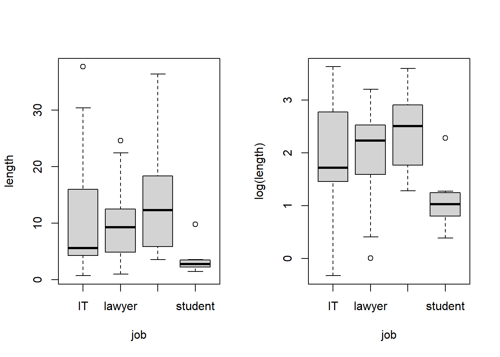

Show R Script
set.seed(42)
# create vector of jobs
jobs <- c("IT", "lawyer", "manager", "student")
# generate log-normally distributed data
it <- rlnorm(30, meanlog = 1.8, sdlog = 0.8)
lawyer <- rlnorm(35, meanlog = 2.1, sdlog = 0.7)
manager <- rlnorm(40, meanlog = 2.3, sdlog = 0.7)
student <- rlnorm(25, meanlog = 1.2, sdlog = 0.4)
# create data frame
calls <- data.frame(
job = factor(rep(jobs, times = c(30, 35, 40, 25)), levels = jobs),
length = c(it, lawyer, manager, student)
)
# plots
par(mfrow = c(1,2))
boxplot(length ~ job, data = calls)
boxplot(log(length) ~ job, data = calls)
Show R Script
par(mfrow = c(1,1))